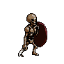
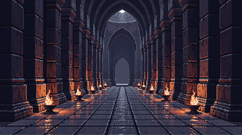
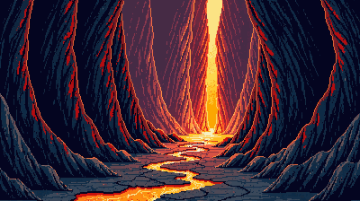
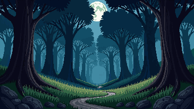

— cenário único com perspectiva e profundidade (em vez de 5 layers planos) —
⚔ COMBAT — 2.5D SCENE
Cursed Crypt
VS


CRYPT 2.5D

LAVA 2.5D

FOREST 2.5D
2.5D scene vs 5-layer parallax — a diferença
✅ Imagem única com perspectiva pintada — pilares/rochas/árvores recuam até um ponto de fuga.
✅ Profundidade e atmosfera coerentes — a IA compõe a cena toda de uma vez, não 5 peças separadas.
✅ Muito mais rico e detalhado (high detail + detailed shading).
⚠️ Perde-se o parallax por layers — mas o efeito de profundidade já está pintado na imagem. Podemos adicionar um leve zoom/pan parallax na imagem inteira.
1 imagem por biome (em vez de 5) — mais simples de gerir.
Decisão
Se gostares deste estilo 2.5D — gero crypt, lava, frost, arena todos assim (4 imagens, ~8 gens com regenerações) + o forest já está.
Reescrevo o combat scene para usar 1 imagem em vez de 5 layers. Mais limpo.
Diz: "vai com 2.5D scene" ou se preferes o sistema de 5 layers.